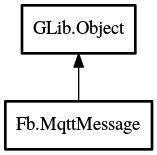

MqttMessage
Object Hierarchy:

Description:
public class MqttMessage : weak Object
Represents a reader/writer for an MQTT message.
Content:
Creation methods:
Methods:
- public weak ByteArray bytes_func ()
Formats the internal ByteArray of the
MqttMessage with the required fixed header.
- public bool read (void* data, uint size)
Reads data from the MqttMessage into a
buffer.
- public bool read_byte (uint8 value)
Reads an 8-bit integer value from the MqttMessage
.
- public bool read_mid (uint16 value)
Reads a message identifier from the MqttMessage
.
- public bool read_r (ByteArray bytes)
Reads the remaining data from the MqttMessage
into a ByteArray.
- public bool read_str (string value)
Reads a string value from the MqttMessage.
- public bool read_u16 (uint16 value)
Reads a 16-bit integer value from the MqttMessage
.
- public void reset ()
Resets an MqttMessage.
- public void write (void* data, uint size)
Writes data to the MqttMessage.
- public void write_byte (uint8 value)
Writes an 8-bit integer value to the MqttMessage
.
- public void write_mid (uint16 value)
Writes a message identifier to the MqttMessage
.
- public void write_str (string value)
Writes a string value to the MqttMessage.
- public void write_u16 (uint16 value)
Writes a 16-bit integer value to the MqttMessage
.
Inherited Members:
All known members inherited from class GLib.Object
- @new
- new_valist
- newv
- add_toggle_ref
- add_weak_pointer
- bind_property
- connect
- constructed
- disconnect
- dispose
- dup_data
- dup_qdata
- freeze_notify
- @get
- get_class
- get_data
- get_property
- get_qdata
- get_type
- notify_property
- @ref
- ref_sink
- replace_data
- replace_qdata
- remove_toggle_ref
- remove_weak_pointer
- @set
- set_data
- set_data_full
- set_property
- set_qdata
- set_qdata_full
- steal_data
- steal_qdata
- thaw_notify
- unref
- weak_ref
- weak_unref
- notify
- ref_count